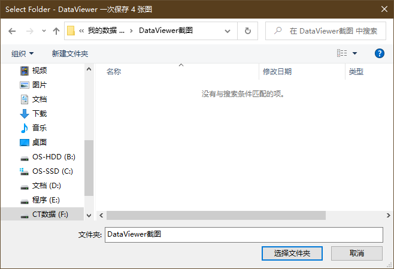
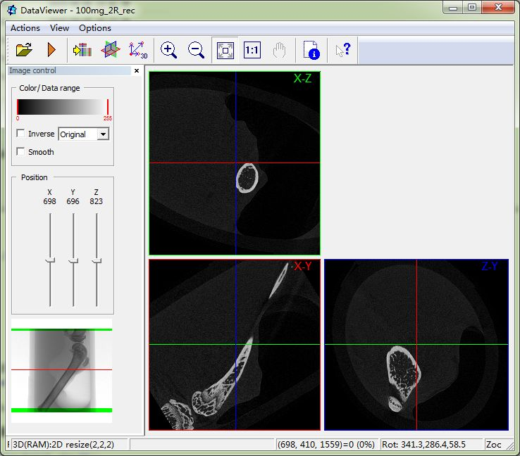
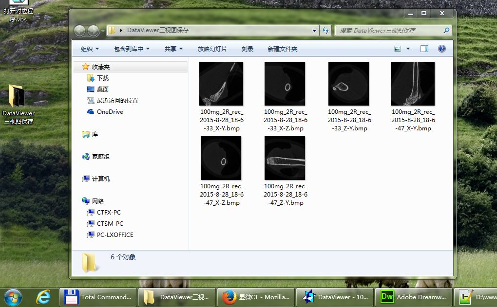
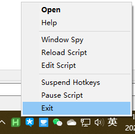
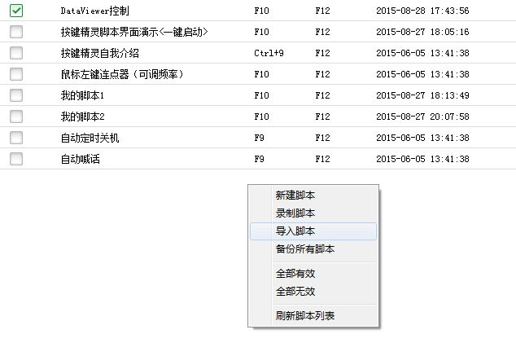
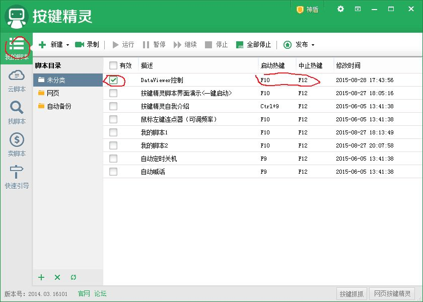
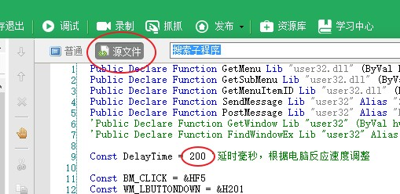
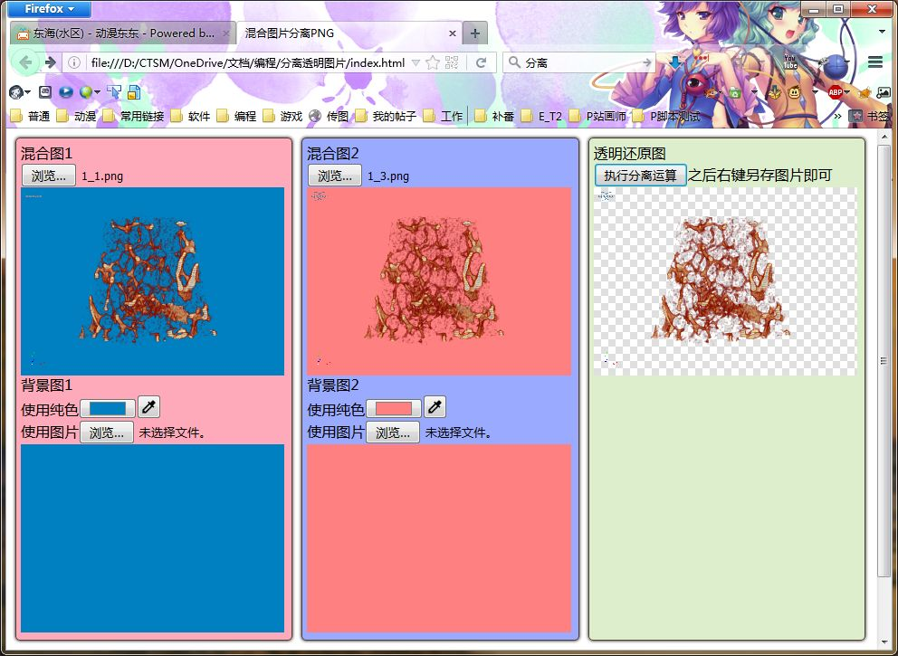

现在有的自编工具：
-
本工具原使用按键精灵编写，为了解决按键精灵必须以管理员权限启动并且易被报毒的问题，特重新使用AutoHotkey编写。
- 安装AutoHotkey v2.0
- 运行自编脚本 DataViewer Fast Save.ahk
- 按照提示选择你要保存图片的位置

- DataViewer 需要进入三视图界面，并将 DataViewer 保持为前台激活窗口。

- 按下脚本设定的快捷键 F10 即可启动自动保存程序。
- 文件会保存到你设定的文件夹下，按照“标本名_日期_时间_方位”的名称保存。

- 使用完毕需自行退出

原按键精灵版（已过时）
DataViewer快速保存三视图工具（Win7 64位、Win10 64位下运行通过，不支持XP）
为了快捷，本工具使用电脑版按键精灵编写。
以最新版按键精灵为例，在“我的脚本”导入后，设置好自己喜欢的快捷键，将脚本设为启用状态。


DataViewer进入3视图界面后，按下快捷键启动程序即可。
文件会保存到桌面“DataViewer三视图保存”文件夹下，按照“标本名_日期_时间_方位”的名称保存。
如果在自家电脑上因为反应速度较慢出现异常，请尝试编辑脚本源文件，将操作延时调整为合适的值。

-
